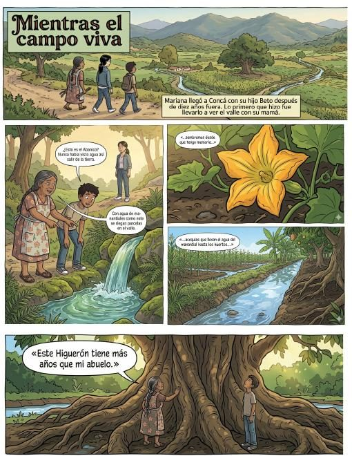

El PMDU no es un trámite más: es el acuerdo sobre cómo crecer sin perder lo que hace posible la vida en el valle. Esto es lo que protege — y lo que te evita.
Un acuerdo con historia y con números
42 años
El programa anterior era de 1984 (y los planes de Concá y la cabecera, de 2004). El nuevo PMDU pone las reglas al día.
56 personas
Participaron en la consulta ciudadana del 27 de junio de 2024, con mesas de trabajo por delegación. Este programa se hizo escuchando.
98.1%
Del territorio municipal es no urbanizable: el municipio entero está dentro de la Reserva de la Biosfera Sierra Gorda. Lo urbano es apenas 1.7%.
Ene 2026
El cabildo aprobó el PMDU (Gaceta Municipal 14). Su vigencia plena llega al inscribirse en el Registro Público.
Lo que la zonificación protege
Los manantiales y acequias
Construir sobre las zonas de recarga contamina y seca el agua que bebemos todos. La zonificación las mantiene libres.
El propio PMDU identifica la contaminación de acequias y manantiales por ocupación de suelos agrícolas como la principal problemática de los barrios de Concá.
El río Santa María
La zona federal del río no se ocupa: es la que amortigua las crecidas y sostiene la vida del cauce. El PMDU lo reconoce como corredor biológico.
La tierra agrícola
Cada parcela lotificada deja de producir para siempre. El valle de riego es el patrimonio productivo de Concá y el PMDU lo marca como zona de conservación agrícola.
El patrimonio familiar
Un lote comprado donde no se puede construir no escritura, no conecta servicios y no se recupera.
El valle es de quien lo cuida.
La zonificación es el acuerdo entre todos para que el crecimiento no destruya lo que nos da de vivir.
Lo que pasa cuando se construye donde no se debe
Ninguna de estas cadenas se revierte fácilmente: detenerlas a tiempo cuesta poco; revertirlas ya consolidadas, casi siempre es imposible.
Y en lo personal, respetar el programa te evita
Obra suspendida y sanciones
Una construcción sin licencia puede ser apercibida, suspendida o sancionada.
Inversión perdida
Lo construido en zona no apta no se regulariza: el dinero invertido no se recupera.
Un lote que no escritura
Sin compatibilidad de uso no hay escritura ni conexión legal de servicios. El "papelito" del lotificador no protege nada.
Conflictos heredados
Las obras irregulares generan reportes, verificaciones y disputas que se heredan a la familia.
El programa no solo pone límites: trae proyectos
Regeneración de la ribera de la acequia madre
Un kilómetro en Concá, del acceso al Árbol Milenario a la calle Miguel Hidalgo, con protección de la zona federal y cruces peatonales de madera.
Red de senderos municipales
Tres trayectos y un circuito de movilidad no motorizada; el trayecto Purísima de Arista – Concá recorre 60 km por el valle.
Calle completa en la carretera 69
Banquetas, cruces seguros e iluminación en el corredor que une la cabecera, Concá y Purísima de Arista.
Equipamiento para Concá
Sanitarios públicos, centro integral de apoyo rural, centro de capacitación para el trabajo y biblioteca itinerante, entre las 15 intervenciones estratégicas.
Respetar la zonificación es también defender estos proyectos: se financian y se ejecutan sobre un territorio ordenado.
El valle en cómic

Mientras el campo viva
La historia de Mariana, Beto y Doña Lupe: por qué el valle de Concá vale más vivo que lotificado, contada en diez páginas. Parte de la campaña de socialización, para escuelas, delegaciones y familias.
Leer el cómic (PDF)Antes de construir, comprar o vender: consulta. Si ves una obra que no corresponde con la zona: repórtala. El Municipio la verifica y la canaliza; tú reportas, no denuncias.
¿Esto se puede aquí? Hacer un reporteVersión para carteles
De esta infografía se producirá la versión imprimible (cartel tamaño doble carta) para presidencia municipal, delegaciones, escuelas y puntos de afluencia — parte de la campaña de ≥3 canales y 10 puntos físicos comprometida en la propuesta de socialización.
En producción